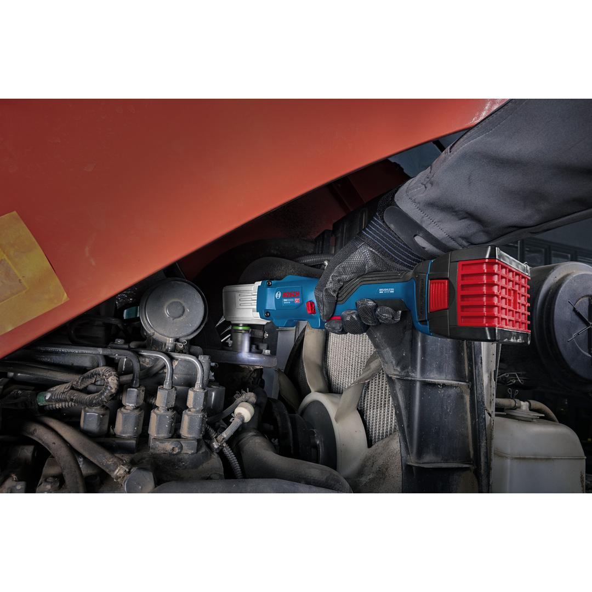
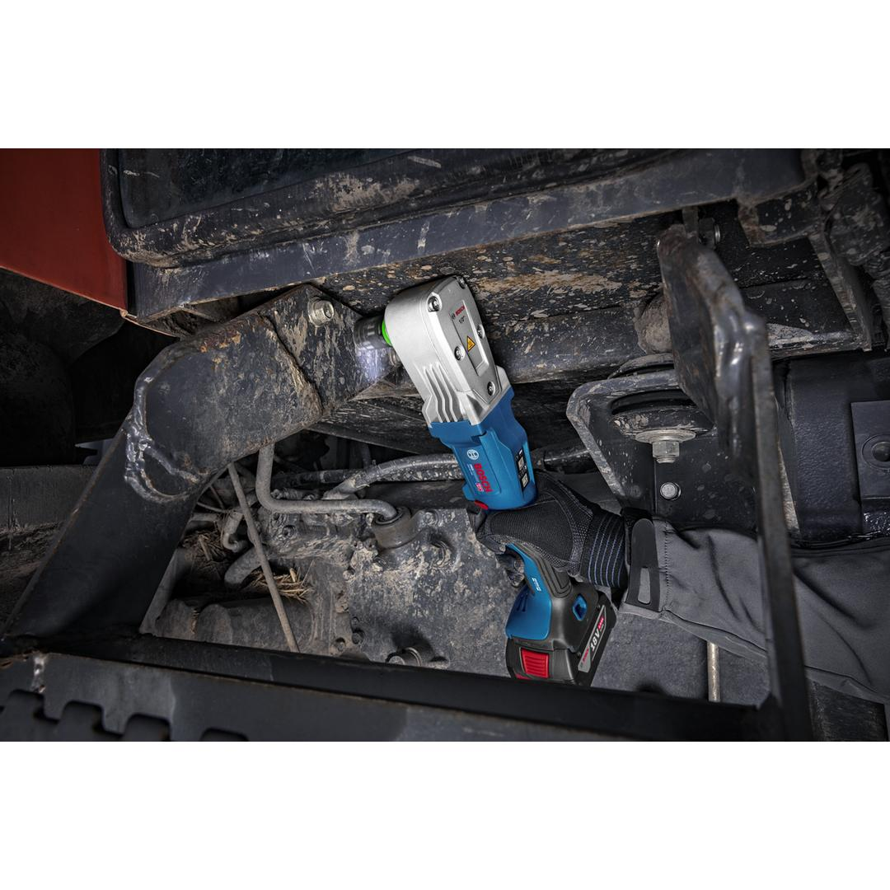
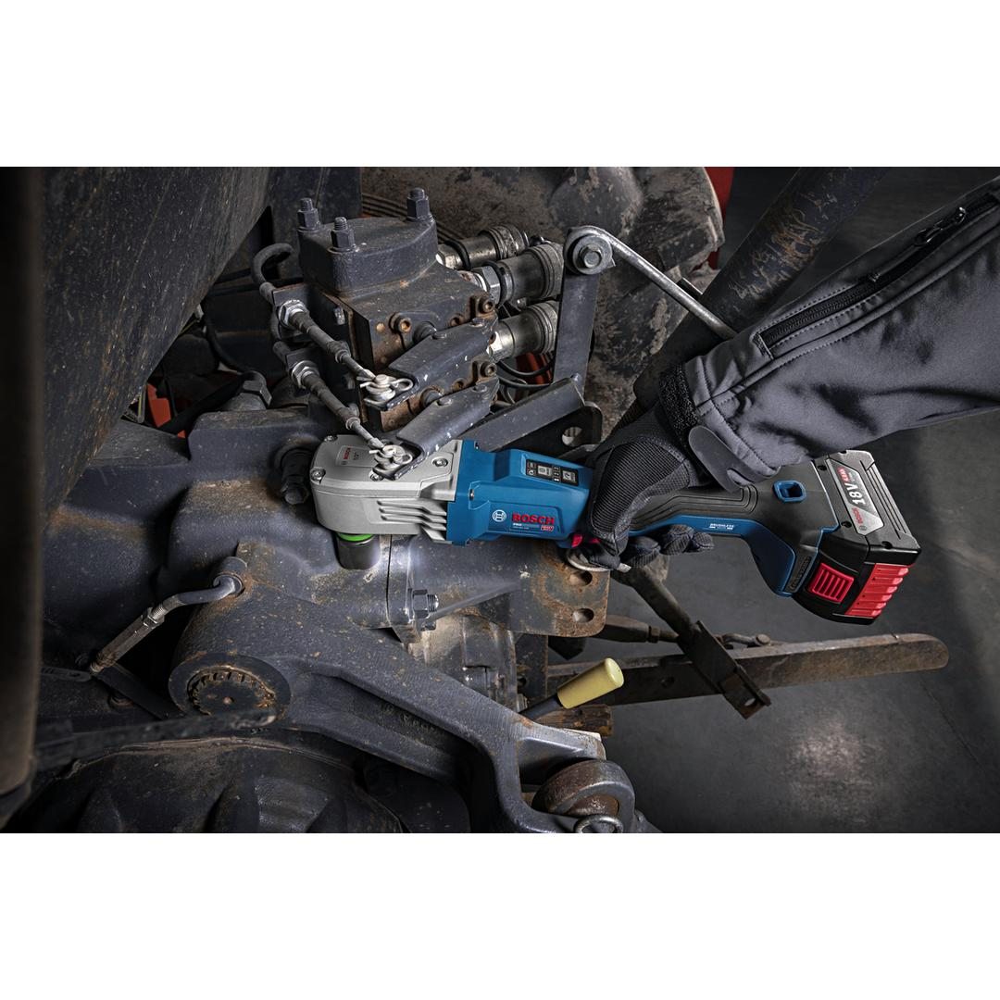
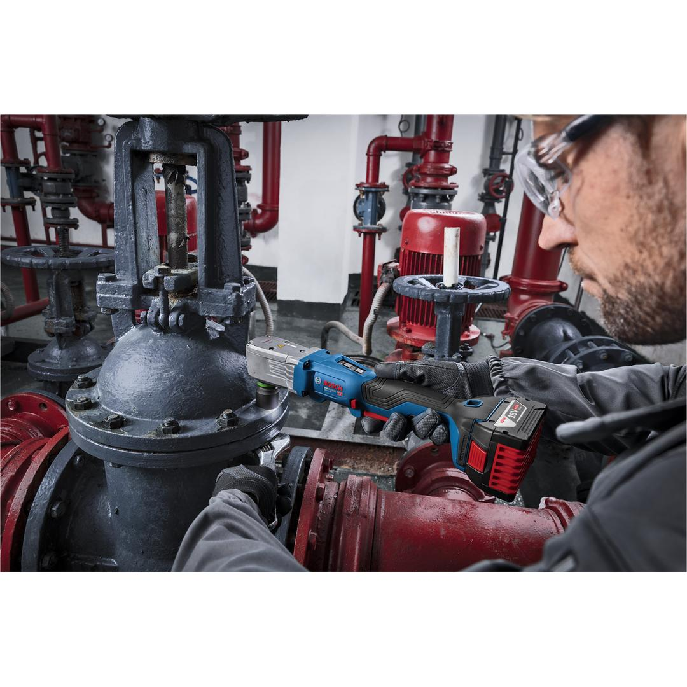
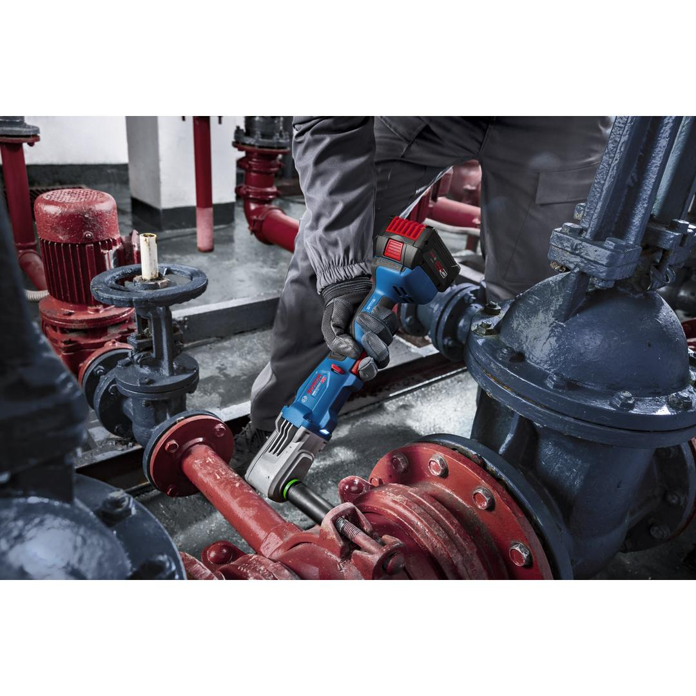
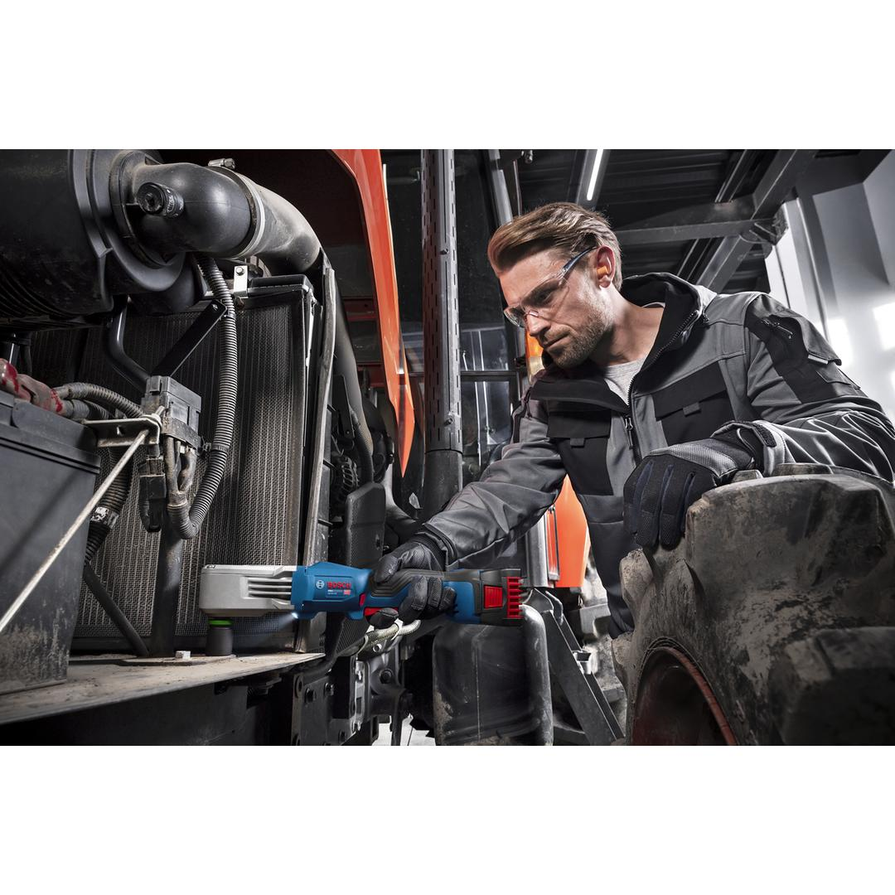
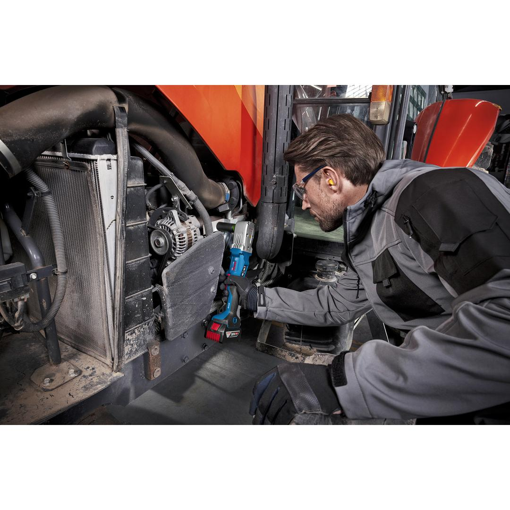
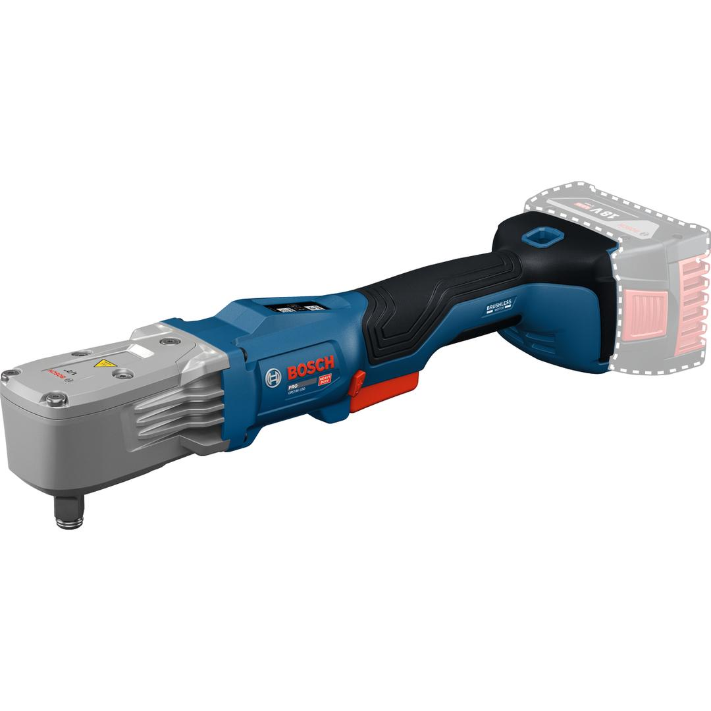

06019R9000








| Noise level |
The A-rated noise level of the power tool is typically as follows: Sound pressure level 102 dB(A); Sound power level 110 dB(A). Uncertainty K= 3 dB. |
| Tool dimensions (width) |
88 mm |
| Tool dimensions (length) |
353 mm |
| Tool dimensions (height) |
87 mm |
| No-load speed |
3,000 rpm |
| Battery voltage |
18.0 V |
| Tool holder |
1/2'' Square |
| Breakaway torque, max. |
560 Nm |
| Torque adjustment range, min./max., 1st level |
85/85 Nm |
| Torque adjustment range, min./max., 2nd level |
200 Nm |
| Torque adjustment range, min./max., 3rd level |
330 Nm |
| No-load speed (1st level) |
1,100 rpm |
| No-load speed (2nd level) |
1,600 rpm |
| No-load speed (3rd level) |
3,000 rpm |
| Torque settings |
3 |
| Weight excl. battery |
1.5 kg |
| Torque, max. |
330 Nm |
| Impact rate (1st level) |
2,300 bpm |
| Impact rate (2nd level) |
3,400 bpm |
| Impact rate (3rd level) |
4,200 bpm |
| Bold size |
M 10 – M 18 |
| BITURBO |
Yes |
High comfort, powerful, right-angle impact wrench for hard-to-reach, narrow spaces
Repairers and installers often find working in tight spaces frustrating due to the long head length of traditional impact wrenches. The PRO HEAVY DUTY GRS18V-330 cordless right-angle impact wrench is designed specifically for tight spaces. Its compact head—just 78 mm long and 56 mm wide—lets you access these areas effortlessly. With a heavy-duty brushless motor delivering up to 330 Nm fastening torque and 560 Nm breakaway torque, it easily handles stubborn bolts. Additionally, 3 speed settings and Auto Shut Off/ABR mode provide precise control for various applications.
The PRO HEAVY DUTY GRS18V-330 cordless right-angle impact wrench is ideal for handling large bolts in metal installations, HVAC systems, auto repairs, or electrical setups. It is compatible with the Bosch Professional 18V System and the multi-brand battery alliance AMPShare.
This wrench has a 2-finger ergonomic switch for more comfort and an LED light to illuminate the working area.